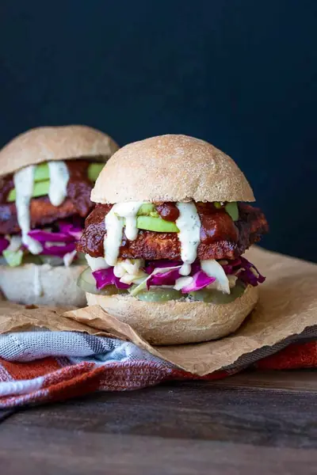

BBQ Tempeh Sandwich

Ingredients
- 1 package tempeh
- 4 of your favorite buns (, gluten free if needed)
- 1 cup BBQ sauce (this homemade one or store bought)
- 2 cups shredded cabbage
- 3 tablespoons apple cider vinegar
- 2 tablespoons maple syrup
- ½ teaspoon ground mustard
- ¼ teaspoon sea salt
- 1 avocado
- 4 sandwich sliced dill pickles
- vegan ranch dressing (, optional but amazing addition)
Steps
- Cut tempeh block in half. Bring a pot of water to a boil, place tempeh halves inside and boil for 10-15 minutes. This removes any bitter taste from the tempeh.
- Preheat oven to 400°F (200°C).
- While it is cooking, make home made BBQ sauce if not using store bought.
- Also, make cabbage slaw by mixing all ingredients together. I like to massage it all with my hands. Set aside and allow to marinate while the rest of the dinner is prepped.
- Once tempeh is done cooking, allow it to cool a bit, then slice each block in half again length wise to make thinner patties. You should have 4 squares.
- Cover each square in BBQ sauce, you can either dip them in the sauce or use a brush to baste it on.
- Place tempeh on a parchment lined cookie sheet and bake for 30 or so minutes, until the edges are browning and crisp. Make sure you turn the slices over half way through. This allows it to crisp on both sides.
- While it is baking, warm the buns and prep the avocado, pickles, and make Ranch if using.
- Once tempeh pieces are done, assemble sandwiches but placing tempeh slices, toppings, and any condiments on buns. Devour!
Recipe by Anjali Shah, from The Picky Eater. Saved here for personal use; the original has the full notes, tips and photos. Open original